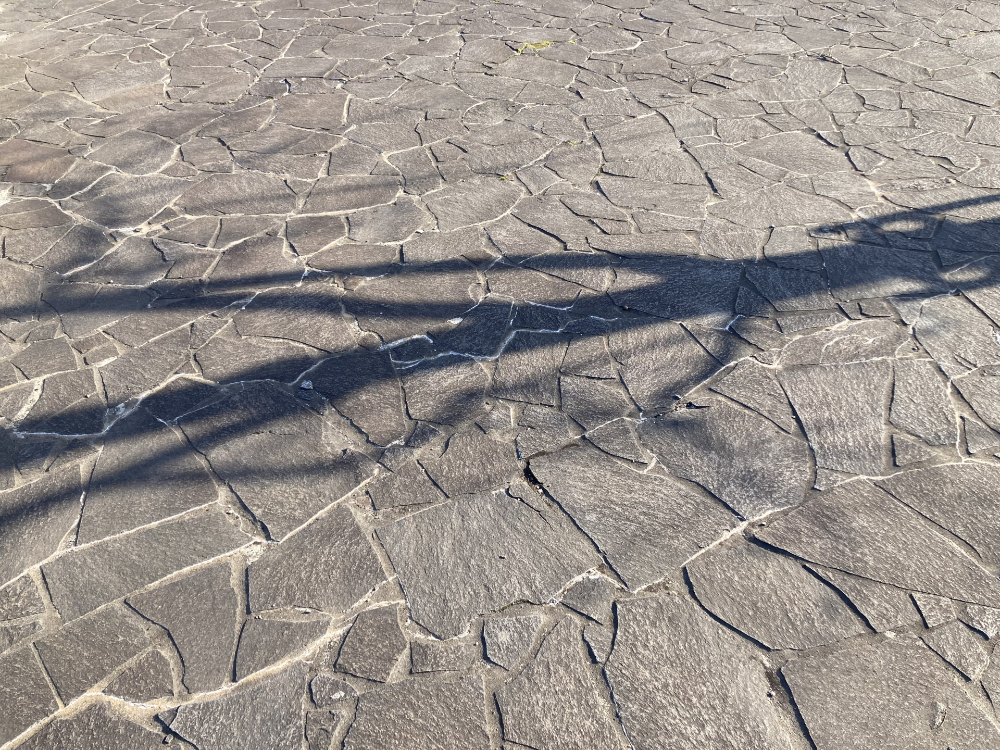

観光地
東揚羽市には老若男女が楽しむことのできる様々なスポットがあります。
橙広場
オレンジ色のタイルが敷き詰められた広場です。みかんジュースの出る蛇口が人気です。
青葉寺

大正時代からこの寺を中心に縁日が開かれており、市民の交流の場となっていました。
今では、あげは市が連携して開催されるようになり、様々な世代の人々が交流する貴重な機会となっています。
また、寺内の庭園は四季折々の表情を見せてくれます。
揚羽崎埠頭
海釣りができるスポットです。隣接のあげはパークには市内と港を一望できる観覧車があります。